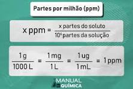
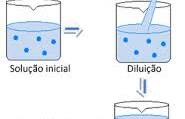
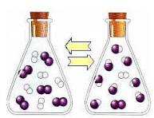
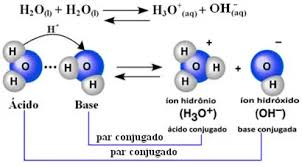

Playlist de Química


💧 Partes por Milhão (ppm)
Partes por Milhão ($ppm$) é uma unidade de concentração utilizada para medir a quantidade de um soluto em proporções extremamente pequenas dentro de uma solução maior. Essencialmente, $1\ ppm$ significa que existe uma parte da substância de interesse para cada um milhão ($1.000.000$) de partes do todo. Esta unidade é crucial em áreas como a Química Ambiental para monitorar e expressar a concentração de traços de poluentes ou aditivos, como $mg$ de flúor por $kg$ de água.
💧 Diluição de Soluções
A diluição de soluções é o procedimento químico de reduzir a concentração de uma solução adicionando-se mais solvente (geralmente água). Neste processo, a quantidade de soluto permanece inalterada, mas o volume total da solução aumenta, resultando em uma concentração final menor. A relação fundamental que governa a diluição
⚗️ Misturas
Uma mistura é o resultado da união física de duas ou mais substâncias puras (elementos ou compostos) onde não ocorre reação química, permitindo que cada componente mantenha suas propriedades químicas individuais e possa ser separado por métodos físicos. Essas combinações são classificadas principalmente em dois tipos: misturas homogêneas (soluções), que apresentam uma única fase e um aspecto uniforme (ex: água e sal totalmente dissolvido); e misturas heterogêneas, que exibem duas ou mais fases e permitem a distinção visual de seus componentes (ex: água e óleo)
⚖️ Equilíbrio Químico
O Equilíbrio Químico é o estado dinâmico alcançado em uma reação reversível (que ocorre nos dois
sentidos) em um sistema fechado, onde as velocidades das reações direta (formação de produtos) e inversa
(regeneração de reagentes) se igualam. Nesse ponto, embora a reação não tenha parado, as concentrações
de reagentes e produtos se mantêm constantes ao longo do tempo. Esse estado é caracterizado pela
Constante de Equilíbrio ($K$), um valor que indica a proporção entre as concentrações de produtos e
reagentes nesse ponto de estabilidade e que só é alterado pela variação da temperatura.

O Princípio de Le Châtelier afirma que se um sistema em equilíbrio químico for perturbado por uma mudança de concentração, temperatura ou pressão, ele irá se deslocar no sentido que anule ou minimize o efeito dessa perturbação. O objetivo é estabelecer um novo estado de equilíbrio.

Este resumo abordou a concentração ($ppm$), a diluição (redução da concentração por adição de solvente), a classificação das misturas (homogêneas e heterogêneas) e, por fim, o Equilíbrio Químico, que, segundo Le Châtelier, é deslocado por mudanças na concentração, temperatura ou pressão para minimizar a perturbação.
O Produto Iônico da Água ($K_w$) é a constante que representa a pequena e contínua autoionização da água pura, gerando os íons positivos hidrônio ($\text{H}^+$) e negativos hidroxila ($\text{OH}^-$). Em qualquer solução aquosa, o produto das concentrações desses dois íons é sempre constante a uma dada temperatura. Essa constante é a base para a escala que mede a acidez e basicidade: o pH mede o quão ácida é a solução (concentração de $\text{H}^+$), e o pOH mede o quão básica ela é (concentração de $\text{OH}^-$). Em uma solução neutra a $25^\circ\text{C}$, tanto o pH quanto o pOH são iguais a 7; em soluções ácidas, o pH é menor que 7 e em soluções básicas, é maior que 7. As duas escalas são inversamente proporcionais e se complementam, somando sempre 14.
